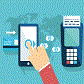
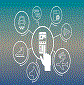

DIGITAL INDIA BANKING SYSTEM
WELCOMEMinistry of Electronics and Information Technology (MeitY), Government of India envisages Paperless, Cashless and Faceless services across the country, especially in rural and remote parts of India. MeitY further envisages common e-Governance infrastructure that will offer end-to-end transactional experience for a citizen, businesses as well as internal government functions, which includes accessing various services and making payments and receipts through electronic modes. The Apex Committee on Digital India has recommended a targeted and time bound approach to implement digital payments for citizens across all the e-Services of Government Ministries and Departments. |
INITIATIVEThe Digital India programme is a flagship programme of the Government of India with a vision to transform India into a digitally empowered society and knowledge economy. “Faceless, Paperless, Cashless” is one of professed role of Digital India.
As part of promoting cashless transactions and converting India into less-cash society, various modes of digital payments are available. |
PAYMENTPayments are made using payment instruments. Cash, for example, is a payment instrument. ... the nature of the payment instrument: through which means—paper or digital—are the instructions carried. the payer-payee interface: whether the payer, payee, or both use an electronic medium in a payment transaction. |
SecurityFraud Alert : DIBS does not call customers to obtain an account number, Social Security number or PIN. We do not send email asking you to update or confirm account information. The security of your assets and information is our top priority. |
Latest News
Oct. 13, 2017.Government has set a target of Rs 2,500 crore on digital transactions in FY 2018. Digital payments have a huge potential. 
Sept. 20, 2017.Digital payment solutions are becoming more relevant for the Indian economy driven by mobile-centric internet penetration. Customers and merchants are holdings two poles of the ecosystem |
Digitalization in the banking industry essentially means making banking smooth and Seamless for customers
© Copyright 2017 ClicheTox WE MAKE YOUR LIFE SIMPLE....